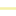

<!doctype html>
<html lang="en">
    <head>
        <meta charset="utf-8">
        <meta http-equiv="X-UA-Compatible" content="IE=edge">
        <meta name="viewport" content="initial-scale=1,user-scalable=no,maximum-scale=1,width=device-width">
        <meta name="mobile-web-app-capable" content="yes">
        <meta name="apple-mobile-web-app-capable" content="yes">
        <link rel="stylesheet" href="css/leaflet.css"><link rel="stylesheet" href="css/L.Control.Locate.min.css">
        <link rel="stylesheet" href="css/qgis2web.css"><link rel="stylesheet" href="css/fontawesome-all.min.css">
        <link rel="stylesheet" href="css/leaflet-control-geocoder.Geocoder.css">
        <style>
        #map {
            width: 1479px;
            height: 571px;
        }
        </style>
        <title></title>
    </head>
    <body>
        <div id="map">
        </div>
        <script src="js/qgis2web_expressions.js"></script>
        <script src="js/leaflet.js"></script><script src="js/L.Control.Locate.min.js"></script>
        <script src="js/multi-style-layer.js"></script>
        <script src="js/leaflet.rotatedMarker.js"></script>
        <script src="js/leaflet.pattern.js"></script>
        <script src="js/leaflet-hash.js"></script>
        <script src="js/Autolinker.min.js"></script>
        <script src="js/rbush.min.js"></script>
        <script src="js/labelgun.min.js"></script>
        <script src="js/labels.js"></script>
        <script src="js/leaflet-control-geocoder.Geocoder.js"></script>
        <script src="data/ROAD_1.js"></script>
        <script src="data/SURIGAORIVER_2.js"></script>
        <script src="data/GeotaggedPhotos_4.js"></script>
        <script>
        var highlightLayer;
        function highlightFeature(e) {
            highlightLayer = e.target;

            if (e.target.feature.geometry.type === 'LineString') {
              highlightLayer.setStyle({
                color: '#ffff00',
              });
            } else {
              highlightLayer.setStyle({
                fillColor: '#ffff00',
                fillOpacity: 1
              });
            }
        }
        var map = L.map('map', {
            zoomControl:true, maxZoom:28, minZoom:1
        }).fitBounds([[9.787966346509705,125.47184692201003],[9.790256701251057,125.47788002439057]]);
        var hash = new L.Hash(map);
        map.attributionControl.setPrefix('<a href="https://github.com/tomchadwin/qgis2web" target="_blank">qgis2web</a> &middot; <a href="https://leafletjs.com" title="A JS library for interactive maps">Leaflet</a> &middot; <a href="https://qgis.org">QGIS</a>');
        var autolinker = new Autolinker({truncate: {length: 30, location: 'smart'}});
        function removeEmptyRowsFromPopupContent(content, feature) {
         var tempDiv = document.createElement('div');
         tempDiv.innerHTML = content;
         var rows = tempDiv.querySelectorAll('tr');
         for (var i = 0; i < rows.length; i++) {
             var td = rows[i].querySelector('td.visible-with-data');
             var key = td ? td.id : '';
             if (td && td.classList.contains('visible-with-data') && feature.properties[key] == null) {
                 rows[i].parentNode.removeChild(rows[i]);
             }
         }
         return tempDiv.innerHTML;
        }
        document.querySelector(".leaflet-popup-pane").addEventListener("load", function(event) {
          var tagName = event.target.tagName,
            popup = map._popup;
          // Also check if flag is already set.
          if (tagName === "IMG" && popup && !popup._updated) {
            popup._updated = true; // Set flag to prevent looping.
            popup.update();
          }
        }, true);
        L.control.locate({locateOptions: {maxZoom: 19}}).addTo(map);
        var bounds_group = new L.featureGroup([]);
        function setBounds() {
        }
        map.createPane('pane_Satellite_0');
        map.getPane('pane_Satellite_0').style.zIndex = 400;
        var layer_Satellite_0 = L.tileLayer('http://mt0.google.com/vt/lyrs=s&hl=en&x={x}&y={y}&z={z}', {
            pane: 'pane_Satellite_0',
            opacity: 1.0,
            attribution: '',
            minZoom: 1,
            maxZoom: 28,
            minNativeZoom: 0,
            maxNativeZoom: 18
        });
        layer_Satellite_0;
        map.addLayer(layer_Satellite_0);
        function pop_ROAD_1(feature, layer) {
            layer.on({
                mouseout: function(e) {
                    for (i in e.target._eventParents) {
                        e.target._eventParents[i].resetStyle(e.target);
                    }
                },
                mouseover: highlightFeature,
            });
            var popupContent = '<table>\
                    <tr>\
                        <td colspan="2">' + (feature.properties['fid'] !== null ? autolinker.link(feature.properties['fid'].toLocaleString()) : '') + '</td>\
                    </tr>\
                    <tr>\
                        <td colspan="2">' + (feature.properties['osm_id'] !== null ? autolinker.link(feature.properties['osm_id'].toLocaleString()) : '') + '</td>\
                    </tr>\
                    <tr>\
                        <td colspan="2">' + (feature.properties['code'] !== null ? autolinker.link(feature.properties['code'].toLocaleString()) : '') + '</td>\
                    </tr>\
                    <tr>\
                        <td colspan="2">' + (feature.properties['fclass'] !== null ? autolinker.link(feature.properties['fclass'].toLocaleString()) : '') + '</td>\
                    </tr>\
                    <tr>\
                        <td colspan="2">' + (feature.properties['name'] !== null ? autolinker.link(feature.properties['name'].toLocaleString()) : '') + '</td>\
                    </tr>\
                    <tr>\
                        <td colspan="2">' + (feature.properties['ref'] !== null ? autolinker.link(feature.properties['ref'].toLocaleString()) : '') + '</td>\
                    </tr>\
                    <tr>\
                        <td colspan="2">' + (feature.properties['oneway'] !== null ? autolinker.link(feature.properties['oneway'].toLocaleString()) : '') + '</td>\
                    </tr>\
                    <tr>\
                        <td colspan="2">' + (feature.properties['maxspeed'] !== null ? autolinker.link(feature.properties['maxspeed'].toLocaleString()) : '') + '</td>\
                    </tr>\
                    <tr>\
                        <td colspan="2">' + (feature.properties['layer'] !== null ? autolinker.link(feature.properties['layer'].toLocaleString()) : '') + '</td>\
                    </tr>\
                    <tr>\
                        <td colspan="2">' + (feature.properties['bridge'] !== null ? autolinker.link(feature.properties['bridge'].toLocaleString()) : '') + '</td>\
                    </tr>\
                    <tr>\
                        <td colspan="2">' + (feature.properties['tunnel'] !== null ? autolinker.link(feature.properties['tunnel'].toLocaleString()) : '') + '</td>\
                    </tr>\
                </table>';
            layer.bindPopup(popupContent, {maxHeight: 400});
            var popup = layer.getPopup();
            var content = popup.getContent();
            var updatedContent = removeEmptyRowsFromPopupContent(content, feature);
            popup.setContent(updatedContent);
        }

        function style_ROAD_1_0(feature) {
            switch(String(feature.properties['ref'])) {
                case '901':
                    return {
                pane: 'pane_ROAD_1',
                opacity: 1,
                color: 'rgba(255,255,255,1.0)',
                dashArray: '',
                lineCap: 'square',
                lineJoin: 'bevel',
                weight: 6.0,
                fillOpacity: 0,
                interactive: true,
            }
                    break;
                default:
                    return {
                pane: 'pane_ROAD_1',
                opacity: 1,
                color: 'rgba(229,224,54,1.0)',
                dashArray: '',
                lineCap: 'square',
                lineJoin: 'bevel',
                weight: 3.0,
                fillOpacity: 0,
                interactive: true,
            }
                    break;
            }
        }
        map.createPane('pane_ROAD_1');
        map.getPane('pane_ROAD_1').style.zIndex = 401;
        map.getPane('pane_ROAD_1').style['mix-blend-mode'] = 'normal';
        var layer_ROAD_1 = new L.geoJson(json_ROAD_1, {
            attribution: '',
            interactive: true,
            dataVar: 'json_ROAD_1',
            layerName: 'layer_ROAD_1',
            pane: 'pane_ROAD_1',
            onEachFeature: pop_ROAD_1,
            style: style_ROAD_1_0,
        });
        bounds_group.addLayer(layer_ROAD_1);
        map.addLayer(layer_ROAD_1);
        function pop_SURIGAORIVER_2(feature, layer) {
            layer.on({
                mouseout: function(e) {
                    for (i in e.target._eventParents) {
                        e.target._eventParents[i].resetStyle(e.target);
                    }
                },
                mouseover: highlightFeature,
            });
            var popupContent = '<table>\
                    <tr>\
                        <td colspan="2">' + (feature.properties['osm_id'] !== null ? autolinker.link(feature.properties['osm_id'].toLocaleString()) : '') + '</td>\
                    </tr>\
                    <tr>\
                        <td colspan="2">' + (feature.properties['code'] !== null ? autolinker.link(feature.properties['code'].toLocaleString()) : '') + '</td>\
                    </tr>\
                    <tr>\
                        <td colspan="2">' + (feature.properties['fclass'] !== null ? autolinker.link(feature.properties['fclass'].toLocaleString()) : '') + '</td>\
                    </tr>\
                    <tr>\
                        <td colspan="2">' + (feature.properties['width'] !== null ? autolinker.link(feature.properties['width'].toLocaleString()) : '') + '</td>\
                    </tr>\
                    <tr>\
                        <td colspan="2">' + (feature.properties['name'] !== null ? autolinker.link(feature.properties['name'].toLocaleString()) : '') + '</td>\
                    </tr>\
                </table>';
            layer.bindPopup(popupContent, {maxHeight: 400});
            var popup = layer.getPopup();
            var content = popup.getContent();
            var updatedContent = removeEmptyRowsFromPopupContent(content, feature);
            popup.setContent(updatedContent);
        }

        function style_SURIGAORIVER_2_0() {
            return {
                pane: 'pane_SURIGAORIVER_2',
                opacity: 1,
                color: 'rgba(100,152,210,1.0)',
                dashArray: '',
                lineCap: 'round',
                lineJoin: 'round',
                weight: 1.0,
                fillOpacity: 0,
                interactive: true,
            }
        }
        map.createPane('pane_SURIGAORIVER_2');
        map.getPane('pane_SURIGAORIVER_2').style.zIndex = 402;
        map.getPane('pane_SURIGAORIVER_2').style['mix-blend-mode'] = 'normal';
        var layer_SURIGAORIVER_2 = new L.geoJson(json_SURIGAORIVER_2, {
            attribution: '',
            interactive: true,
            dataVar: 'json_SURIGAORIVER_2',
            layerName: 'layer_SURIGAORIVER_2',
            pane: 'pane_SURIGAORIVER_2',
            onEachFeature: pop_SURIGAORIVER_2,
            style: style_SURIGAORIVER_2_0,
        });
        bounds_group.addLayer(layer_SURIGAORIVER_2);
        map.addLayer(layer_SURIGAORIVER_2);
        map.createPane('pane_CabalawanSubd_3');
        map.getPane('pane_CabalawanSubd_3').style.zIndex = 403;
        var img_CabalawanSubd_3 = 'data/CabalawanSubd_3.png';
        var img_bounds_CabalawanSubd_3 = [[9.786230904906532,125.47103604835645],[9.790621684613077,125.47657545596394]];
        var layer_CabalawanSubd_3 = new L.imageOverlay(img_CabalawanSubd_3,
                                              img_bounds_CabalawanSubd_3,
                                              {pane: 'pane_CabalawanSubd_3'});
        bounds_group.addLayer(layer_CabalawanSubd_3);
        map.addLayer(layer_CabalawanSubd_3);
        function pop_GeotaggedPhotos_4(feature, layer) {
            layer.on({
                mouseout: function(e) {
                    for (i in e.target._eventParents) {
                        e.target._eventParents[i].resetStyle(e.target);
                    }
                },
                mouseover: highlightFeature,
            });
            var popupContent = '<table>\
                    <tr>\
                        <td colspan="2">' + (feature.properties['fid'] !== null ? autolinker.link(feature.properties['fid'].toLocaleString()) : '') + '</td>\
                    </tr>\
                    <tr>\
                        <td colspan="2">' + (feature.properties['photo'] !== null ? '' : '') + '</td>\
                    </tr>\
                    <tr>\
                        <td colspan="2">' + (feature.properties['filename'] !== null ? autolinker.link(feature.properties['filename'].toLocaleString()) : '') + '</td>\
                    </tr>\
                    <tr>\
                        <td colspan="2">' + (feature.properties['directory'] !== null ? '' : '') + '</td>\
                    </tr>\
                    <tr>\
                        <td colspan="2">' + (feature.properties['altitude'] !== null ? autolinker.link(feature.properties['altitude'].toLocaleString()) : '') + '</td>\
                    </tr>\
                    <tr>\
                        <td colspan="2">' + (feature.properties['direction'] !== null ? autolinker.link(feature.properties['direction'].toLocaleString()) : '') + '</td>\
                    </tr>\
                    <tr>\
                        <td colspan="2">' + (feature.properties['longitude'] !== null ? autolinker.link(feature.properties['longitude'].toLocaleString()) : '') + '</td>\
                    </tr>\
                    <tr>\
                        <td colspan="2">' + (feature.properties['latitude'] !== null ? autolinker.link(feature.properties['latitude'].toLocaleString()) : '') + '</td>\
                    </tr>\
                    <tr>\
                        <td colspan="2">' + (feature.properties['timestamp'] !== null ? autolinker.link(feature.properties['timestamp'].toLocaleString()) : '') + '</td>\
                    </tr>\
                </table>';
            layer.bindPopup(popupContent, {maxHeight: 400});
            var popup = layer.getPopup();
            var content = popup.getContent();
            var updatedContent = removeEmptyRowsFromPopupContent(content, feature);
            popup.setContent(updatedContent);
        }

        function style_GeotaggedPhotos_4_0() {
            return {
                pane: 'pane_GeotaggedPhotos_4',
                radius: 13.2,
                opacity: 1,
                color: 'rgba(184,8,8,1.0)',
                dashArray: '',
                lineCap: 'butt',
                lineJoin: 'miter',
                weight: 1.0,
                fill: true,
                fillOpacity: 1,
                fillColor: 'rgba(184,8,8,1.0)',
                interactive: true,
            }
        }
        function style_GeotaggedPhotos_4_1() {
            return {
                pane: 'pane_GeotaggedPhotos_4',
                radius: 12.799999999999999,
                opacity: 1,
                color: 'rgba(255,0,0,1.0)',
                dashArray: '',
                lineCap: 'butt',
                lineJoin: 'miter',
                weight: 1.0,
                fill: true,
                fillOpacity: 1,
                fillColor: 'rgba(255,0,0,1.0)',
                interactive: true,
            }
        }
        map.createPane('pane_GeotaggedPhotos_4');
        map.getPane('pane_GeotaggedPhotos_4').style.zIndex = 404;
        map.getPane('pane_GeotaggedPhotos_4').style['mix-blend-mode'] = 'normal';
        var layer_GeotaggedPhotos_4 = new L.geoJson.multiStyle(json_GeotaggedPhotos_4, {
            attribution: '',
            interactive: true,
            dataVar: 'json_GeotaggedPhotos_4',
            layerName: 'layer_GeotaggedPhotos_4',
            pane: 'pane_GeotaggedPhotos_4',
            onEachFeature: pop_GeotaggedPhotos_4,
            pointToLayers: [function (feature, latlng) {
                var context = {
                    feature: feature,
                    variables: {}
                };
                return L.circleMarker(latlng, style_GeotaggedPhotos_4_0(feature));
            },function (feature, latlng) {
                var context = {
                    feature: feature,
                    variables: {}
                };
                return L.circleMarker(latlng, style_GeotaggedPhotos_4_1(feature));
            },
        ]});
        bounds_group.addLayer(layer_GeotaggedPhotos_4);
        map.addLayer(layer_GeotaggedPhotos_4);
        var osmGeocoder = new L.Control.Geocoder({
            collapsed: true,
            position: 'topleft',
            text: 'Search',
            title: 'Testing'
        }).addTo(map);
        document.getElementsByClassName('leaflet-control-geocoder-icon')[0]
        .className += ' fa fa-search';
        document.getElementsByClassName('leaflet-control-geocoder-icon')[0]
        .title += 'Search for a place';
        var baseMaps = {};
        L.control.layers(baseMaps,{' Geotagged Photos': layer_GeotaggedPhotos_4,"Cabalawan Subd": layer_CabalawanSubd_3,' SURIGAO RIVER': layer_SURIGAORIVER_2,'ROAD<br /><table><tr><td style="text-align: center;"></td><td>HIGHWAY</td></tr><tr><td style="text-align: center;"></td><td>CITY ROAD</td></tr></table>': layer_ROAD_1,"Satellite": layer_Satellite_0,}).addTo(map);
        setBounds();
        var i = 0;
        layer_ROAD_1.eachLayer(function(layer) {
            var context = {
                feature: layer.feature,
                variables: {}
            };
            layer.bindTooltip((layer.feature.properties['name'] !== null?String('<div style="color: #ffffff; font-size: 8pt; font-weight: bold; font-family: \'Arial Black\', sans-serif;">' + layer.feature.properties['name']) + '</div>':''), {permanent: true, offset: [-0, -16], className: 'css_ROAD_1'});
            labels.push(layer);
            totalMarkers += 1;
              layer.added = true;
              addLabel(layer, i);
              i++;
        });
        L.ImageOverlay.include({
            getBounds: function () {
                return this._bounds;
            }
        });
        resetLabels([layer_ROAD_1,layer_SURIGAORIVER_2]);
        map.on("zoomend", function(){
            resetLabels([layer_ROAD_1,layer_SURIGAORIVER_2]);
        });
        map.on("layeradd", function(){
            resetLabels([layer_ROAD_1,layer_SURIGAORIVER_2]);
        });
        map.on("layerremove", function(){
            resetLabels([layer_ROAD_1,layer_SURIGAORIVER_2]);
        });
        </script>
    </body>
</html>
